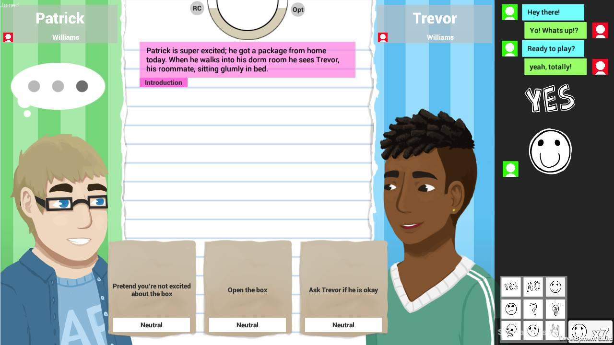

Dan Shredder in Hellzone
Dan Shredder in Hellzone is a badass rail-based adventure through the depths of hell. You play as Dan Shredder and wield the power of rock to battle demons. Players utilize a guitar controller as well as a dance pad to select enemies and defeat them by playing musical riffs. I worked on Dan Shredder as a gameplay programmer, working closely with the game's designers on implementing features in the Unreal 4 engine.
Enter the Cave
Enter the Cave is an online multiplayer game that allows two prospective college students to work together and discuss problems and scenarios that can occur when living with a roommate in a dorm environment. It was written in Unity 5 using C#, XML, and Photon Unity Networking. I worked on Enter the Cave as an Advanced Programmer at the Emergent Media Center on a small team of other developers.
SOLiTAIRE
SOLiTAIRE was a project to utilize the skills I had learned during the development of Tetrosity in making a game from scratch instead of following a tutorial. I decided that Klondike Solitaire was a simple enough game to develop in my time period while being challenging enough to test my skills. Overall, I'm happy with the direction the project is moving in, but I wish I had been able to accomplish more before my deadline arrived.
Tetrosity
Tetrosity is a test project I created to familiarize myself with SpriteKit and Swift as well as the iOS development workflow. I followed a tutorial at bloc.io called "Swiftris" that walks through the steps of writing Tetris in Swift. Along the way I explored the ins and outs of Swift and SpriteKit, and added in a few extra bits of polish. This project was mostly a big learning process and a tool for figuring out how to develop for this platform. In the future I plan to use these skills to write a game of my own from scratch.
DiscordBot

DiscordBot is a personal project to create a bot which can sit in a Discord chat server and perform actions for the users. These include all sorts of things such as responding to commands, moderating chat, and even playing music for a voice channel. I created it using C# and .NET alongside a fantastic community written API for connecting to Discord called DiscordSharp. It's really cool!
Getting Away with Murder
Getting Away With Murder is a 5 player asymmetrical multiplayer game with a spooky atmosphere. 4 players team up as the Murderers, having recently broken into a mansion and murdered it's owner. These players try to burn the owner's corpse before his Ghost haunts them to death. The 5th player takes control of the Ghost and tries to take revenge on the Murderers.